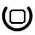

Start here
The panel and its seven buttons
What the Hectare Mini panel consists of, how it is mounted, and what each of the seven buttons does with a short and a long press.
The Hectare Mini panel has a 320 × 240 colour screen and seven buttons on the frame around it. The buttons are touch areas, not mechanical keys: a short touch is a short press; a touch held for about half a second is a long press.

- Power button. Touch-sensitive, at the top edge of the housing.
- Bracket. Lets you mount the panel on a flat surface at any angle, horizontally or vertically. For mounting on a tube, an additional bracket is available.
- The seven buttons. Three on the left, three on the right, one under the screen — see the table below.
- Screen. It also takes touches in some places, for example the digits of the number pad.
- Cable entry. One harness brings the speed sensor, the sensor network and the power supply to the panel.
The seven buttons
| Button | Short press | Long press |
|---|---|---|
| Moves on to the next working screen. In an alarm window: closes the alarm. | On the home screen and the rate control screen: locks or unlocks product application, if the machine has dispenser motors or a liquid fertilizer pump. In an alarm window: closes it and returns to the home screen. | |
| Leaves a menu, a window or a mode, one step back. On the home screen: opens the tramline bout menu, if the tramline is on. | On the home screen, while seeding: sets the alarm level from the flow being applied — see Set the alarm level. | |
| Lowers the selected value. In the sensor setup mode: takes the selected sensor out of control. | — | |
 “MENU” |
Opens the menu of the screen, or enters the selected menu item. In the sensor setup mode: opens the context menu of the selected device. | On the home screen, the rate control screen and the Motors screen: switches on the sensor setup mode. |
| “PLUS” | Raises the selected value. In the sensor setup mode: takes the selected sensor into control. | — |
| Selects the next item, field or device. | — | |
| Selects the previous item, field or device. | — |
If “Buttons sound” is set to “Yes” in the Settings menu, the panel beeps at every touch it accepts.
What every button does on every screen: Buttons on every screen.
Something your machine does that this page does not answer? Write to support@agriwelt.com — an engineer answers.